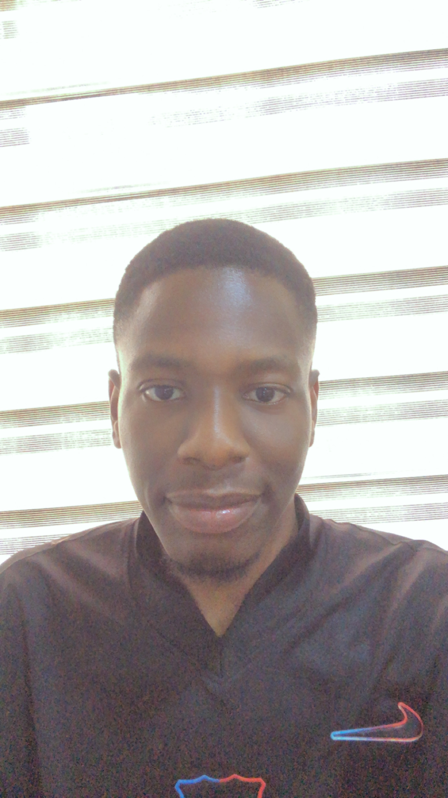

Suleiman Ibrahim Enessy
Computer Science Graduate
Aspiring Web Developer

Summary/Objective
Aspiring Web developer and computer science graduate with experience in IT support, teaching, data analysis and Microsoft Office applications.
Currently developing skills in HTML and CSS with a strong interest in building responsive and user-friendly websites.
Motivated to continuously learn, solve problems and create practical technology solutions.
Education
- Bachelor of Science (B.Sc.) in Computer Science
Al-Hikmah University- 2021
- Senior Secondary Certificate (SSC)
Imperial School, Kudenda, Kaduna- 2017
- First School Leaving Certificate (FSLC)
Challawa Nursery and Primary School, Kaduna- 2011
Work Experience
IT Support
Kadwel International School-Kaduna
October 2025 - Present
- Provide IT support and assistance with computer-related issues.
- Support users with software and technology-related tasks.
- Assist with maintaining and troubleshooting computer systems.
Teacher
Excel Modern Integrated Schools-Kaduna
March 2024 - October 2025
- Planned and delivered lessons to students.
- Used technology and digital tools to support teaching and learning.
- Communicated technical and educational concepts to students.
National Youth Service Corp (NYSC)
National Information Technology Development Agency (NITDA),
Abuja
October 2021 - October 2022
Student Industrial Work Experience Scheme (SIWES)
Kaduna Refining and Petrochemical Company (KRPC),
Kaduna
July 2019 - October 2019
Skills
Technical Skills
- HTML(Currently Learning)
- Microsoft Word
- Microsoft Excel
- Microsoft Powerpoint
- Data Analysis and Processing
- IT Support
- Computer troubleshooting
Professional Skills
- Problem Solving
- Communication
- Teamwork
- Adaptability
- Time Management
- Creativity and Innovation
Certification and Achievements
- IBM SkillsBuild Data Analysis Certificate - 2024
- Bachelor of Science (B.Sc.) in Computer Science - 2021
- National Youth Service Corps (NYSC) - 2021-2022
Hobbies Contact